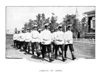
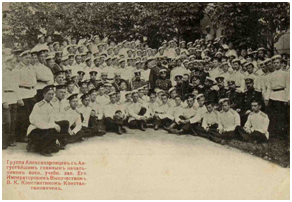

Великий князь Константин Константинович (1858-1915) ГМЗ «Павловск»
Великий князь Константин Константинович был вторым сыном в семье Константина Николаевича, брата царствовавшего тогда императора Александра III, и, соответственно, приходился внуком Николаю I.
Родился он под Санкт-Петербургом, в Стрельне, 10 (22) августа 1858 г.
При крещении, как это было заведено для великокняжеских семей, он был пожалован орденами Св. Апостола Андрея Первозванного, Св. Александра Невского и Св. Анны 1-й степени, а также назначен шефом Тифлисского гренадерского полка и зачислен в списки целого ряда придворных лейб-гвардейских полков и в Гвардейский экипаж.
Детство, образование, юность
Великий князь получил прекрасное и разностороннее домашнее образование. В его обучении и воспитании принимали участие известные историки С.М. Соловьев и К.Н Бестужев-Рюмин,
Музыкальный образованием великого князя занимались известный в то время музыкальный критик Г.А. Ларош, виолончелист И.И. Зейферт и пианист Рудольф Кюндингер.
Г.А. Лорош (1845-1904)Р. В. Кюндигер (1832-1913)
Фрегат «Светлана».
Отец мальчика великий князь Николай Константинович, будучи адмиралом и руководителем Морского ведомства, готовил Константину карьеру морского офицера. В 7 лет воспитателем Константину назначили известного педагога, много лет преподававшего в Морском кадетском корпусе капитана 1 ранга А.И Зеленого, а занятия стали проводить в соответствии с программой корпуса. Более того, в 1874 и 1876 гг. Великий князь гардемарином совершил дальнее плавание в Атлантический океан и Средиземное море на фрегате «Светлана». В августе 1876 г. сдал экзамен по программе Морского училища и был произведён в чин мичмана.
В этом же звании великий князь принял участие в Русского-турецкой войне (1877-1878) и за проявленную смелость в 1877 г. был награжден орденом Св. Георгия 4-й степени. В 1878 г. Константин был произведен в лейтенанты, в том же году – назначен флигель-адъютантом. Казалось, перед молодым человеком открывались блестящие перспективы. Однако ухудшившееся состояние здоровья не позволило великому князю продолжить службу на флоте, и в 1882 г. он был переведен в сухопутное ведомство и произведен в штабс-капитаны гвардии. До конца 1883 г. он получает отпуск по болезни, во время которого, путешествуя по Европе знакомится со своей будущей женой.
Жених, муж, отец
Принцесса Елизавета Августа Мария Агнесса Саксен-Альтенбурская, 1879(?) г.
В 1883 г., находясь в немецком Альтенбурге, он познакомился с принцессой Елизаветой Августой Марией Агнессой, второй дочерью принца Саксен-Альтенбургского.
Семья великого князя Константина Константиновича. 1899 (?)
В 1884 г. состоялась их свадьба, после которой Елизавета Августа получила русское имя и отчество Елизавета Маврикиевна, но православия так и не приняла и всю жизнь оставалась лютеранкой. Лиленька, как ласково называл ее Константин Константинович, подарила ему девятерых детей – шесть сыновей и три дочери, превратив великого князя, если не в счастливого мужа, то в счастливого отца – точно.
Музыкант, композитор, переводчик, поэт, драматург, актер
Константин Константинович был необычайно разносторонне одаренным человеком. Он прекрасно играл на нескольких музыкальных инструментах и практически профессионально играл на фортепьяно. У себя в Мраморном дворце он регулярно устраивал «музыкальные утренники» «matinee» для выдающихся музыкантов и композиторов, вечерние спектакли, концерты с участием М.А.Балакирева. Н.А.Римского-Корсакова, А.Г.Рубинштейна, Иоганна Штрауса. Он и сам пробовал себя как композитор и написал несколько романсов, которые вынужден был анонимно издать в Германии. Сборник этих романсов с надписью” Петру Ильичу Чайковскому в память весны 1880 года. 2 ноября 1880». Константин Константинович подарил великому композитору, с которым он много лет дружил и состоял в переписке.
Великий князь Константин Константинович. 1890-е
Он знал несколько иностранных языков. Перевел с немецкого “Мессианскую невесту” Ф. Шиллера. Но вершиной его таланта на этомпоприще стал перевод “Гамлета” У. Шекспира, над которым он трудился в течение 1898-1899 гг. Этот перевод, сопровожденный двумя томами обширных комментариев, вышел в 1899 г. и в последующем неоднократно переиздавался.
Великий князь Константин Константинович был также известным русским поэтом и драматургом, печатавшим свои произведения под псевдонимом “К.Р.” Его первые стихи увидели свет в журнале «Вестник Европы» еще в 1882 г. В 1886 г. появилась уже первая книга «Стихотворения К. Р.» , которая в продажу не поступала, а была разослана тем, кого поэт считал близкими себе по духу (в том числе А. Фету, А. Майкову, Я. Полонскому). Она вызвала множество позитивных, а порою и восторженных откликов, что позволило великому князю поверить в свой талант. Вскоре под тем же псевдонимом стала появлятьсяего любовная и пейзажная лирика, салонные стихи и поэтические зарисовки. В 1888 г. К. Р. издал свою первую поэму «Севастиан-мученик», затем - сборники “Новые стихотворения К.Р.», “Третий сборник стихотворений К.Р.” (1900), «Стихотворения К.Р.» (1901).
Портрет великогокнязя Константина Константиновича (К.Р.). 1906. Худ. А.М. Леонтовский
Ясные по настроению и мелодичные стихотворения «К.Р.» привлекали к себе особое внимание композитов и более семидесяти его стихотворений положены на музыку, превращаясь в романсы (самый известный —«Растворил я окно...» с музыкой П. И. Чайковского). Романсы на его стихи писали композиторы С.В.Рахманинов, А. Гречанинов, М.М.Ипполитов-Иванов, П.Г.Чесноков, Р.М.Глиэр, В.С.Калинников, А.К. Глазунов, А.Г.Рубинштейн, а их первой исполнительницей стала известная оперная певица Е.А.Лавровская. А ставшее популярной песней стало стихотворение «Умер бедняга в больнице военной» вообще долгое врем считалась народной.
Великий князь Константин Константинович в роли Иосифа Аримафейского. 1914 г.
Самым известным литературнымпроизведением великого князя стала драма “Царь Иудейский” (1913), посвященная последним дням земной жизни Иисуса Христа. Она предназначалась для народных театров и преследовала цель создать зрелище, очищающее душу. Несмотря на высокий художественный и нравственный уровень и положительные отзывы, драма была запрещена Святейшим Синодом к постановке. В виде исключения в 1914 г. ее разрешили поставить литературно-театральному кружку «Измайловский досуг», поскольку его члены не являлись профессиональной труппой.Премьера состоялась в Эрмитажном театре 9 января 1914 г. Сам великий князь играл Иосифа Аримафейского.
Литературно-художественный кружок «Измайловский досуг» был организован Константином Константиновичем в 1884 г. в период его службы в Измайловском полку. Члены кружка читали и слушали литературные произведения не только сами, но и в исполнении известных поэтов и писателей, которые приходили к ним. Офицеры полка музицировали, ставили пьесы.
Эмблема и девиз “Измайловского досуга”. 1884 г.
Девизом этого объединения были слова «Во имя доблести, добра и красоты», а эмблема состояла из меча и лиры, обвитых цветами.
Великий князь Константин Константинович в роли Гамлета. 1900
Собрания кружка подразделялись на обычные (где читали стихи и прозу), музыкальные и драматические. Здесь впервые была поставлена трагеди У.Шекспира “Гамлет” в переводе Константина Константиновича. При этом Гамлета играл сам великий князь. Позднее спектакли «Гамлета» были даже перенесены в Мраморный дворец. 17 февраля 1900 г. «Гамлет» шёл на сценеИмператорского Эрмитажного театра, в присутствии всей Императорской фамилии, дипломатического корпуса, Двора и представителей высшего общества.
Отец семейства
В 1891 г. по окончанию службы в Измайловском полку великий князь Константин Константинович был назначен командующим лейб-гвардии Преображенским полком, став в переносном смысле “отцом” солдатам, которые, по воспоминаниям современников, его очень любили и глубоко уважали.
Дети великого князя Константина Константиновича. Фототипия с сепии Э. К. Липгарта. 1911
Но при этом Константин Константинович был отцом большой семьи, самой большой в царствующем доме Романовых.
В его семье родилось девять детей: шесть мальчиков ― Иоанн, Гавриил, Константин, Олег, Игорь, Георгий, и три девочки ― Татьяна, Наталья (которая умерла в младенчестве) и Вера.
Дети по возрасту были объединены в группы ― старшие и младшие. В каждой группе были общие воспитатели, педагоги. Общую программу занятий выработал знаменитый историк, академик Александр Сергеевич Лаппо-Данилевский. Он же вел общее наблюдение за образованием.
Князь императорской крови Гавриил Константинович (ГА РФ)
Характерно, что все сыновья великого князя обучались, получали общее классическое и специальное военное образование по выбранному кадетскому корпусу. Старший князь Иоанн был зачислен в Первый кадетский корпус, Гавриил ― в Первый Московский, Константин ― Нижегородский, Олег ― Полоцкий, Игорь ― Петровско-Полтавский, Георгий ― Орлово-Бахтинский. Из-за невозможности постоянно присутствовать в этих корпусах они учились дома, проходя необходимую практику в петербургских военных заведениях, сдавая экзамены весьма требовательной специальной комиссии.
Рисунок князя Гавриила Константиновича
«Гренадеры старой гвардии» (1902) (ГА РФ)
Кадет Первого Московского кадетского корпуса князь Гавриил Константинович.
Автограф князя Гавриила: «Милому Иоанчику. Гавриил 1902 г.» (ГА РФ)
Когда началась Первая мировая война, великий князь Константин Константинович вместе с женой и младшими детьми находился на лечении в Германии. На подъезде к России немецкие власти вынудили 56-летнего больного великого князя с женщинами и детьми высадиться из поезда, пересадили на автомобиль и, переехав границу, приказали далее идти пешком. В день возвращения родителей в Петербург, 22 июля 1914 г., первым на фронт уехал князь Иоанн, 23 июля ― князья Гавриил, Олег, Игорь, 3 августа ― князь Константин.
Князья императорской крови Олег, Гавриил, Игорь.
Автограф великого князя Константина Константиновича: «Наши три гусара. Котаны. Действующая армия.7 сентября 1914» (ГА РФ)
Князь Олег на смертном одре. 29 сентября 1914
Все сыновья великого князя героически воевали на разных фронтах, все были награждены. К несчастью, один из них, князь Олег погиб. Он был единственным представителем царствующего дома, погибшим на фронте.
«Отец всех кадет»
4 марта 1900 г. в жизни кадетских корпусов России, можно сказать, наступила новая эра. В этот день на пост Главного начальника военно-учебных заведений был назначен великий князь Константин Константинович.
Великий князь Константин Константинович во время инспекторской поездки (ГА РФ)
Его вступление на эту должность и инспекторская поездка по всем вверенным ему, отцу шестерых кадет, учебным заведениям привели к настоящей революции в кадетском образовании того времени. По итогам общения с офицерами, преподавателями и кадетами корпусов он пришел к выводу, что «установленный в них режим слишком формален и не сообразован с возрастом воспитанников, главным образом в надзоре и запрещении, причем надзор этот организован совершенно одинаково и для десятилетних мальчиков, и для юношей 18-20 лет».
Как офицер, прошедший серьезную флотскую и армейскую школу, отец шестерых сыновей и, в конце концов, творческий и не лишенный увлечений человек он сразу принимает несколько радикальных для кадетских корпусов того времени решений:
отменить телесные наказания;
упразднить исправительные военно-учебные заведения и преобразовать их в нормальные военно-учебные заведения;
запретить исключать из корпусов кадет за полученные ими случайно «юношеские» болезни;
разрешить курение в старшей роте, с устройством курилок.
Великий князь Константин Константинович с группой офицеров-преподавателей
во время своего первого посещения Павловского военного училища в качестве Главного начальника военно-учебных заведений.
Столовый зал Одесского кадетского корпуса
По его указанию в штат обслуживания кадетских корпусов были введены зубоврачебные кабинеты. Было предусмотрено улучшение питания, с назначением особого рациона слабосильным кадетам, учащены медицинские осмотры, введен душ и ножные ванны в умывальниках. Расширены ротные библиотеки. К ручному труду были добавлены курсы рисования и лепки.

Кадеты Омского кадетского корпуса в городе. 1901
Особое внимание великий князь уделял самовыражению кадет, в частности выпуску самодеятельных журналов, которые очень скоро появились практически во всех кадетских корпусах. Для кадет организовывались образовательные экскурсии. Практиковались выезды в летние лагеря.
При великом князе Константине Константиновиче окончательно формируется ставший потом каноническим «кодекс» поведения кадет, который, в частности, гласил:
Кадет есть будущий слуга Отечества и защитник его от врагов внешних и внутренних.
Каждому кадету надлежит быть: благочестивым, беспредельно преданным Отечеству, быть правдивым во всем, беспрекословно повиноваться начальникам, быть храбрым и терпеливо переносить все тяготы, которые подчас бывают неизбежны.
Кадет обязан строго и точно соблюдать воинскую дисциплину и порядок в корпусе.
По всем надобностям он обязан всегда обращаться только к своему непосредственному начальнику.
Кадет не имеет права самовольно отлучаться из корпуса, не получив на то разрешения.
Каждый кадет должен иметь и вне корпуса бодрый и молодцеватый вид. Соблюдать со всей точностью правила отдания воинской чести.
Кадет обязан вести себя прилично, с посторонними быть вежливым, не вмешиваться в споры, не участвовать в уличных сборищах и беспорядках. Он должен помнить, что по его поведению за пределами корпуса будут судить не только о нем, но и о корпусе в целом и мундире, который он носит.
Оружие, снаряжение, обмундирование и прочие состоящие на нем казенные вещи кадет обязан беречь и содержать всегда в полной исправности.
Возвращение кадет Петровско-Полтавского корпуса с парада. 14 мая 1908 г.
После своего назначения Главным начальником военно-учебных заведений великий князь Константин Константинович настоял перед государем вернуть десяти старейшим кадетским корпусам прежние знамена, которые были сданы в архив при переименовании корпусов в военные гимназии, и отдал распоряжение выносить их на парадах «как наивысшую воинскую святыню и лучшее украшение кадетского строя».
В ноябре 1903 г. знамена были пожалованы кадетским корпусам, созданным в конце XIX – начале XX вв., а в последующие годы – вновь учрежденным корпусам: Хабаровскому, Сумскому, Суворовскому, Одесскому, Ташкентскому, Владикавказскому. К 1914 г. знамена были вручены Вольскому и Иркутскому кадетским корпусам.
Вручение знамени, его прибивка к древку и освящение обставлялись с особой торжественностью. При освящении знамени все кадеты приводились к присяге. В строй знамена выносили в дни храмового и корпусного праздников, в день празднования военного ордена, при молебствиях для прощающихся с корпусом выпускников и в других особо торжественных случаях.
Великий князь Константин Константинович четко сформулировал и последовательно проводил в жизнь свои идея, связанные с кадетским воспитанием: «Закрытое заведение обязано, по мере нравственного роста своих воспитанников, постепенно поднимать в них сознание их человеческого достоинства и бережно устранять всё то, что может унизить или оскорбить это достоинство. Только при этом условии воспитанники старших классов могут стать ТЕМ, чем они должны быть, — цветом и гордостью своих заведений, друзьями своих воспитателей и разумными направителями общественного мнения всей массы воспитанников в добрую сторону».
Великий князь Константин Константинович. 1904
За очень короткое время он стал любимцев всех кадет. Выпускник Воронежского кадетского корпуса А.Марков вспоминал, что именно благодаря стараниям великого князя “казарменная атмосфера прежних корпусов” сменилась "заботливым отеческим воспитанием". А по словам П. Волошина из Полтавского корпуса, для кадетских корпусов "эпоха деятельности Константина Константиновича может с полной справедливостью называться эпохой перерождения".
Мягкость, доброта, искренний интерес к нуждам кадет – вот те черты, которые видели в нем воспитанники корпусов, которые видели в нем подлинного "отца", вникающего во все стороны их жизни и, главное, понимающего их.
Выпускник Полтавского кадетского корпуса М. Шереметов вспоминал: "Его характерной особенностью было то, что он из всего умел создать интерес, и разговор возле него не умолкал. В этом его внимании к каждому из своих собеседников, как бы таковой ни был мал, заключалась значительная доля его обаятельности. Президент Академии наук, он с полным пониманием мог вести разговор о резиновых мечах, о свойстве рогатки, о лучшем способе плавания".
Кроме того, существует множество мемориальных свидетельств о том, как великий князь неоднократно заступался за наказанных воспитанников.

Великий князь Константин Константинович с группой офицеров и кадет Александровского кадетского корпуса (Из частной коллекции)
При посещении великим князем кадетских корпусов дело доходило до того, что кадеты срезали с его шинели пуговицы на память, после посещения им столовой корпуса разбирали столовые приборы, которыми он пользовался, всеми путями стремились получить его автограф.
Отдавая массу сил и энергии развитию кадетских корпусов, Константин Константинович успешно и плодотворно занимался еще массой других дел. Масштаб его личности был поистине огромен. Он был Президентом Академии наук, почётным попечителем Педагогических курсов при петербургских женских гимназиях; Состоял председателем Императорского Русского археологического общества, Императорского общества любителей естествознания, антропологии и этнографии, Императорского Российского общества спасания на водах, Императорского Православного Палестинского общества, действительным членом Императорского общества поощрения художеств, Императорского Русского музыкального общества, почетным членом Русского астрономического общества, Русского исторического общества, Русского общества Красного Креста, Русского общества содействия торговому судоходству.
Благодаря его усилиям был открыт ряд обсерваторий (строительство Одесской, например, велось на его личные средства), организован ряд научных экспедиций. Среди них — Полярная экспедиция под руководством барона Э.В.Толля, а также на Шпицберген, Новую Землю, в Монголию, в Семиречье.
Великий князь Константин Константинович. 1910 (ГА РФ)
Он был одним из основателей Пушкинского Дома. Им открыт отдел изящной словесности, в который ходили Л.Н.Толстой, А.П.Чехов, В.Г.Короленко, И.А. Бунин. Он учредил Пушкинскую премию. Великий князь создал первую в России комиссию помощи нуждающимся ученым, музыкантам, литераторам.
Уйдя с должности Главного начальника военно-учебных заведений в 1910 г. и пребывая в должности генерал-инспектора военно-учебных заведений, великий князь до самой своей кончины (2 июня 1915 г) энергично руководит делом развития и усовершенствования кадетских корпусов.
Плита на могиле великого князя Константина Константиновича в Петропавловской крепости
Константин Константинович скончался в возрасте 57 лет и был погребен в Петропавловской крепости. В его похоронах принимали участие Пажеский корпус, сводные роты Санкт-Петербургских кадетских корпусов. Имя великого князя было присвоено Одесскому кадетскому корпусу. После эмиграции кадетских корпусов из России, его имя было присвоено кадетскому корпусу в Югославии, который просуществовал до 1944 г.